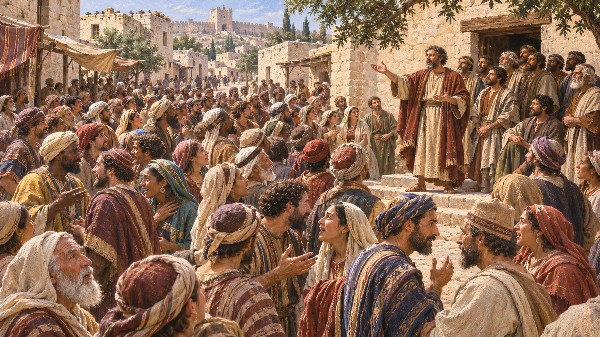
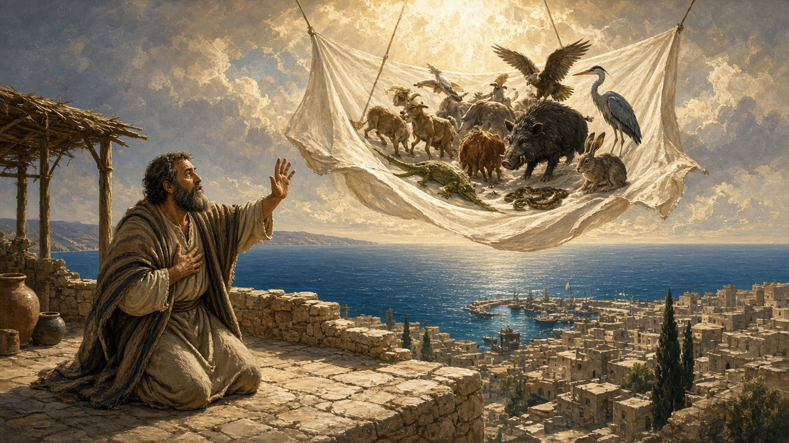
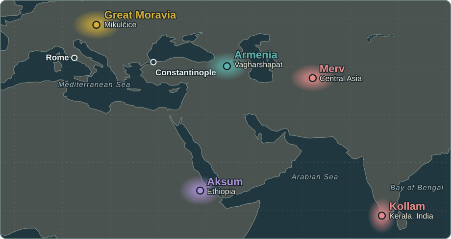
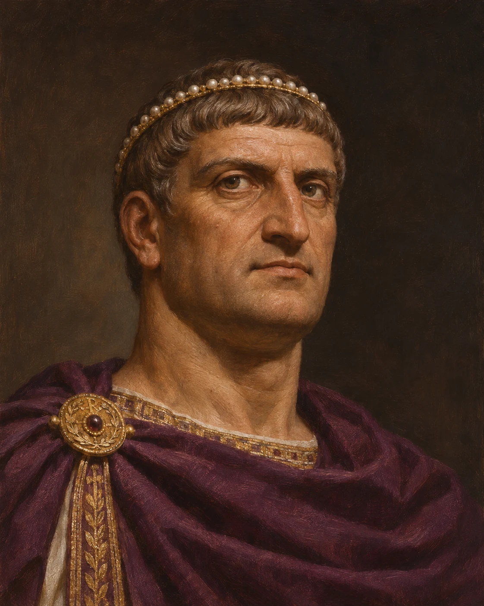

REL 210 · Chapter 11
A Jewish Movement Becomes a Transregional Church
30s CE
Jesus' earliest followers worship in Jerusalem and proclaim his resurrection.
40s–60s
Paul and other missionaries establish communities across the eastern Mediterranean.
70 CE onward
The Temple's destruction and other changes reshape Jewish and Christian communal identities.
Second–fourth centuries
Church networks expand, develop offices, and negotiate Roman power.
There was no single day on which Christianity simply 'stopped being Jewish'.
Pentecost and the Earliest Church
Pentecost
At Shavuot, the disciples hear a sound like wind, see tongues like fire, and speak in other languages.
Acts 2:1–13 (NRSV)
Proclamation
Peter announces Jesus’s resurrection and calls his listeners to repent and be baptized.
Acts 2:14–41 (NRSV)
Community
Believers learn from the apostles, pray, break bread together, and share with those in need.
Acts 2:42–47 (NRSV)

AI illustration of Peter addressing the crowd in Jerusalem (Acts 2:5–14).
Often called the “birthday of the Church,” though Jesus’s followers still understood themselves as Jews.
Paul and the Gentile Mission
Paul’s Conversion and Calling
- Paul once persecuted followers of Jesus.
- On the road to Damascus, he experienced what he understood as an encounter with the risen Christ.
- He joined the movement he had persecuted and became one of its missionaries.
Paul understood his calling as a commission to proclaim Christ among the Gentiles.
Paul and the Gentile Mission
Gentile Inclusion and the Circumcision Debate
- As Gentiles (non-Jews) joined the movement, Jesus’s followers debated what Gentile converts had to do to belong.
- Did Gentile men need to be circumcised, a sign of the Jewish covenant? Did Gentile converts have to observe the Law of Moses?
Some Jewish followers of Jesus
They argued that Gentile converts should be circumcised and keep the Law of Moses.
Paul
He argued that Gentiles could join the community through faith in Christ without undergoing circumcision or taking on full Torah observance.
Paul and the Gentile Mission
Jerusalem and the Gentile Question
One movement, diverse practice
Jewish followers of Jesus continued in Jewish religious life as Gentiles joined their communities.
Titus in Paul’s account
Paul says that Titus, a Gentile who accompanied him to Jerusalem, was allowed to remain uncircumcised. Galatians 2:1–10
The Jerusalem meeting in Acts
The leaders waived circumcision for Gentile converts and asked them to observe several restrictions. Acts 15:1–29
After his vision, Peter tells Cornelius, “God has shown me that I should not call anyone profane or unclean.” Acts 10:28 (NRSV)
Why it mattered
Gentiles could enter communities of Jesus followers while remaining Gentiles.

Paul and the Gentile Mission
Justification by Faith
“… a person is justified not by the works of the law but through faith in Jesus Christ.”
Galatians 2:16 (NRSV)
For Paul, being put right with God was a gift received through faith in Christ. That gave Jewish and Gentile believers a shared basis for belonging.
Paul and the Gentile Mission
Paul’s Network of Churches
- Paul’s letters kept him connected to house churches and addressed disputes, worship, and daily life.
- Read aloud. When a church gathered, someone read the letter to the congregation.
- Shared between churches. Churches exchanged and copied individual letters, which circulated before they were gathered into collections.
- Recognized as Scripture. Paul’s letters eventually became part of the New Testament canon, the list of books that make up the New Testament of the Christian Bible.

AI illustration of Paul dictating a letter to a scribe (Romans 16:22).
From Jewish Movement to Distinct Church
- The separation was gradual, uneven, and contested.
Jewish disciples debate the meaning of Jesus within Jewish lifeGrowing Divergence
Gentile membership, Torah practice, and claims about Jesus reshape identityDistinct Communities
After 70 CE, churches and emerging rabbinic Judaism increasingly develop apart
Later Christian anti-Judaism turned family arguments into harmful stereotypes and persecution; Christianity’s Jewish roots must remain visible.
Growth of the Church: New Leaders
- As the apostles died, local churches developed lasting structures of leadership
- Christianity established itself in every large and midsize city in the eastern Roman Empire
- Local leadership: episkopos (overseer or bishop) and presbyter (elder)
- These leaders did not have authority to speak for the whole church or declare doctrine
Persecution and Martyrs
- The growth of Christianity challenged the Roman Empire
- It led to increased persecutions and the martyrdom of Christians
- … but persecution failed to wipe out the movement
The oftener we are mown down by you, the more in number we grow; the blood of Christians is seed.
Tertullian, Apology 50 (c. 197)

AI-generated image: Christians in a Roman catacomb, with the early symbols of fish, anchor, and dove
Why Did Christianity Grow?
- No single cause explains expansion across the Roman world.
Networks
Roads, ports, common languages, and urban travel connected house churches.
Belonging
Congregations crossed some ethnic, gender, and social boundaries.
Mutual Care
Members supported the sick, poor, widowed, imprisoned, and displaced.
Hope
Resurrection and eternal life offered meaning amid suffering and death.
Growth came through ordinary relationships and resilient communities as much as through famous missionaries.
Christianity Beyond the Roman West

Armenia
First kingdom to adopt Christianity officially, traditionally in 301.
Aksum
King Ezana adopted Christianity in the fourth century.
Merv & Kollam
Syriac Christian communities at inland and maritime trade centers.
Great Moravia
Cyril and Methodius arrived in 863 and promoted Slavic-language worship.
Constantine and the Christianization of the Roman Empire
Constantine at the Milvian Bridge
- 306 · Two sons claim power
After Constantius dies at York, his troops proclaim his son Constantine emperor. Maxentius, son of Maximian, usurps power in Rome. - 312 · Battle of the Milvian Bridge
Constantine defeats Maxentius outside Rome. Eusebius says that before the battle Constantine saw a cross of light inscribed “Conquer by this.” He links the vision to Constantine’s Chi-Rho standard. - 313 · Edict of Milan
Constantine and Licinius agree to protect freedom of worship for Christians and others.

Chi-Rho with alpha and omega in an early Christian mosaic; image from the original deck
From Toleration to Imperial Religion

313 · Legal toleration
Christians gain legal protection for worship.
325 · Council of Nicaea
Constantine convenes bishops to address a dispute over Christ’s divinity.
330 · Constantinople
Constantine dedicates a new imperial capital on the Bosporus.
380 · Imperial religion
Theodosius I makes Nicene Christianity the empire’s official religion.
REL 210 · Chapter 11
What Changed with Imperial Favor?
Legal status
From vulnerable minority to legally protected, then imperially privileged Christianity.
Institutions
Bishops and councils gain public influence and resources.
Unity
Doctrinal disputes become matters of public and sometimes imperial order.
Continuities
Scripture, worship, baptism, and claims about Jesus remain central.
Distinguish Constantine's toleration (313) from official Nicene establishment under Theodosius I (380).
PIERIAN SPRING · REQUIRED INDEPENDENT STUDY
Women and the Earliest Christian Communities
Women among Jesus' followers
Luke 8:1–3 and the Passion narratives portray women as disciples, supporters, and witnesses.
House-church leaders
Paul refers to Prisca, Phoebe, and Junia in Romans 16.
Varied offices and roles
Early communities developed ministries, patronage networks, teaching, and leadership in different settings.
Interpretive task
Compare the evidence for women's activity with later restrictions in some Christian communities.
The earliest church was not composed solely of the Twelve or male bishops.
PIERIAN SPRING · REQUIRED INDEPENDENT STUDY
From House Gatherings to Public Buildings
First-century assemblies
Christians met in homes, shared meals, prayed, taught, and offered material support.
House churches
Local patrons and households provided space and linked social networks.
Before Constantine
Surviving sites, including Dura-Europos, illustrate adapted spaces for Christian worship.
After legalization
The basilica became a prominent form for larger public Christian worship and episcopal ceremony.
A change of building also signals changing social position, resources, and ritual scale.
PIERIAN SPRING · REQUIRED INDEPENDENT STUDY
Why Christianity Spread: Networks and Geography
Roman mobility
Roads, shipping lanes, cities, and a common Greek-language world supported long-distance exchange.
Local relationships
Households, kinship ties, merchants, migrants, and patronage formed durable networks.
Beyond Rome
Christianity developed in Syria, Egypt, North Africa, Armenia, Ethiopia, and farther east.
Different circumstances
Persecution was intermittent and varied by region and ruler before the fourth century.
The growth of Christianity had no single cause and was never confined to western Europe.
PIERIAN SPRING · REQUIRED INDEPENDENT STUDY
Check Your Understanding: Origins of the Church
1. Continuity
In what ways did the earliest Jesus movement remain part of Judaism?
2. The Gentiles
How do Acts 15 and Galatians 2 illuminate an early dispute?
3. Community
What can Romans 16 tell us about household networks and women's activity?
4. Changing space
What happened when some Christian congregations moved from houses to basilicas?
Study check: explain the examples, not only the terminology. Return to earlier slides when needed.